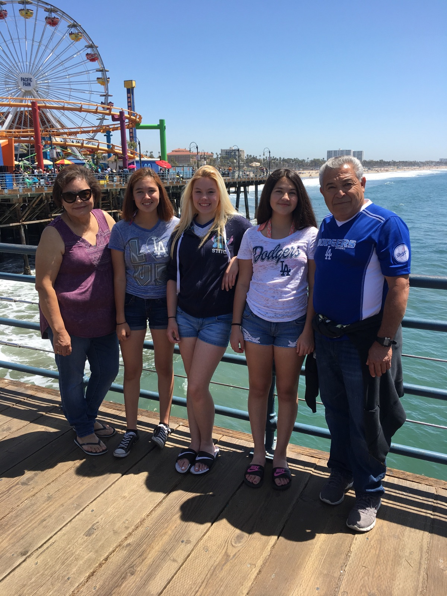

Home
Hi There! So this is my first website and so this new to me so stick with me.
My life
I have gone to 4 different states. I have gone to Oklahoma, Texas, New Mexio, and here California.

California is where I settled with my mom and my brother. I have has great experiences here, I have gone to Disneyland, the beach, the zoo, and Six Flags.
In Oklahoma the weather was terrible. It snows in the winter and it gets really really hot. There isn't much to do but there are really nice water parks. I left from there when I was 8 years old.
On our way to Californna we passed through Texas and New Mexico. In Texas we passed through Dallas which is home of my favorite football team. In Utah we just drove by but we saw pretty sites. :)